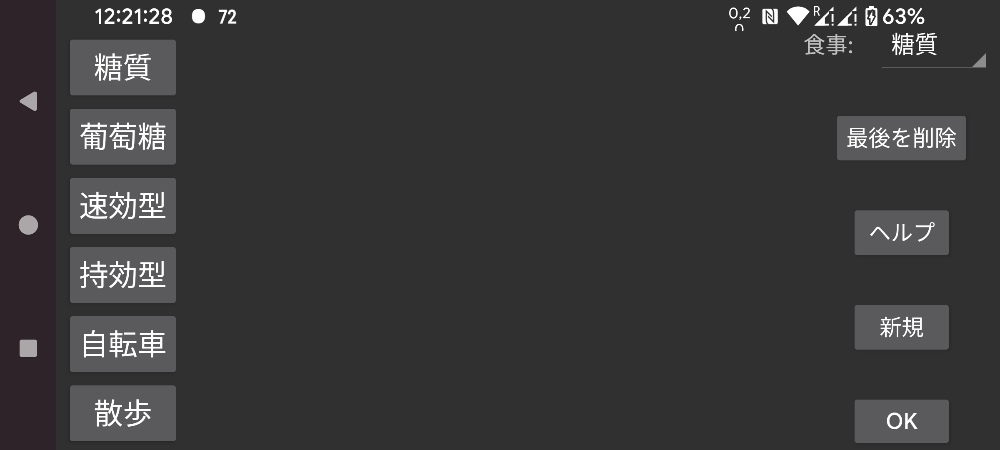

ここでは、グラフに追加する数量(インスリン、炭水化物、運動など)のラベルを作成、削除、変更できます。すでに保存された数量がある場合、それらは位置に対応するラベルになります。例えば 2 番目の位置に別の名前を付けると、以前の名前で 2 番目の位置に保存された数量は新しい名前を持つようになります。
ラベルを変更するにはタッチします。
食事の後、食事の炭水化物量を表すラベルを選択できます。そのラベルでは、左中メニューの「新規記録」に 食事 ボタンが追加され、食材から食事を指定できるようになります。炭水化物の合計はそのラベルの下に保存され、後で保存値の食事を選んでこの食事を確認できます。